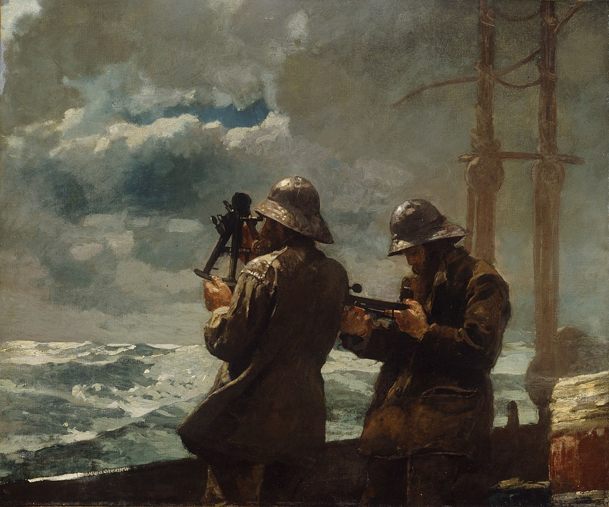

<head>
<meta charset="UTF-8" />
<meta name="keywords" content="drawing, painting" />
<meta name="description" content="drawings by Sunjy" />
<title>Sunjy</title>
<link rel="shortcut icon" type="image/x-icon" href="../../mImages/mCommon/favicon.ico" media="screen" />
<link rel="stylesheet" type="text/css" href="../../mCsses/mCommon/mCssA.css" />
<link rel="stylesheet" type="text/css" href="../../mCsses/mCommon/mCssB.css" />
<link rel="stylesheet" type="text/css" href="../../mCsses/mCommon/mCssC.css" />
<link rel="stylesheet" type="text/css" href="../../mCsses/mCommon/mCssD.css" />
<link rel="stylesheet" type="text/css" href="../../mCsses/mContent/mCssA.css" />
<link rel="stylesheet" type="text/css" href="../../mCsses/mContent/mCssB.css" />
<link rel="stylesheet" type="text/css" href="../../mCsses/mContent/mCssC.css" />
<link rel="stylesheet" type="text/css" href="../../mCsses/mContent/mCssD.css" />
</head>
<script type="text/javascript" src="../../mScripts/mContent/mContentAA.js" /></script>
<script type="text/javascript" src="../../mScripts/mContent/mContentAB.js" /></script>
<script type="text/javascript" src="../../mScripts/mContent/mContentAC.js" /></script>
<script type="text/javascript" src="../../mScripts/mContent/mContentAD.js" /></script>
<script type="text/javascript"></script> 
<script type="text/javascript">
document.write('<div class="mImgAbsolute"></div>');
/*
document.write('<p class="mFontSizeBColor" />From a white paper...</p>');
document.write('<table class="center"><tr><td>');
document.write('');
document.write('</td></tr></table>');
*/
</script>


<script type="text/javascript">
document.write('<p class="mFontSizeBColor" />Eight Bells</p>');
document.write('<p class="mFontSizeSColor" />“Eight Bells” by Winslow Homer depicts two sailors determining their ship’s latitude. It is one of Homer’s best-known paintings that dramatically narrates humanity’s relationship to the ocean. This painting was the culmination of a series of oil paintings that Homer made in Maine. Also, several years earlier, Homer, a painted watercolor on his voyage to England that also showed a sailor performing this activity.<br><br>“Eight Bells” is a reference to the watch system, computed as one bell every 30 minutes. “Eight bells” can be either 8 o’clock, 12 o’clock, or 4 o’clock.<br><br>The two sailors dominate the foreground, and the details of the ship are minimized. Homer shows the figure at left using an octant to take a reading of the sun; the other sailor is reading the altitude of a completed sight on his octant.<br></p>');
document.write('<table class="center" /><tr><td>');
document.write('<br>“Eight Bells” is a reference to the watch system, computed as one bell every 30 minutes. “Eight bells” can be either 8 o’clock, 12 o’clock, or 4 o’clock.<br><br>The two sailors dominate the foreground, and the details of the ship are minimized. Homer shows the figure at left using an octant to take a reading of the sun; the other sailor is reading the altitude of a completed sight on his octant.<br>" />');
document.write('</td></tr></table>');
</script>


